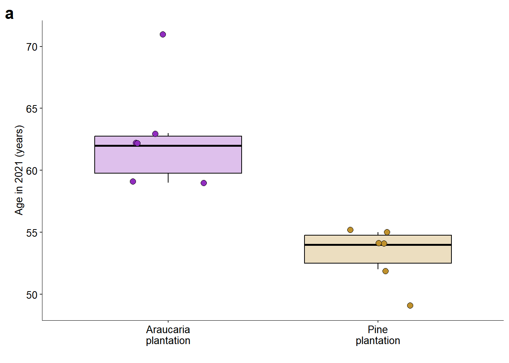
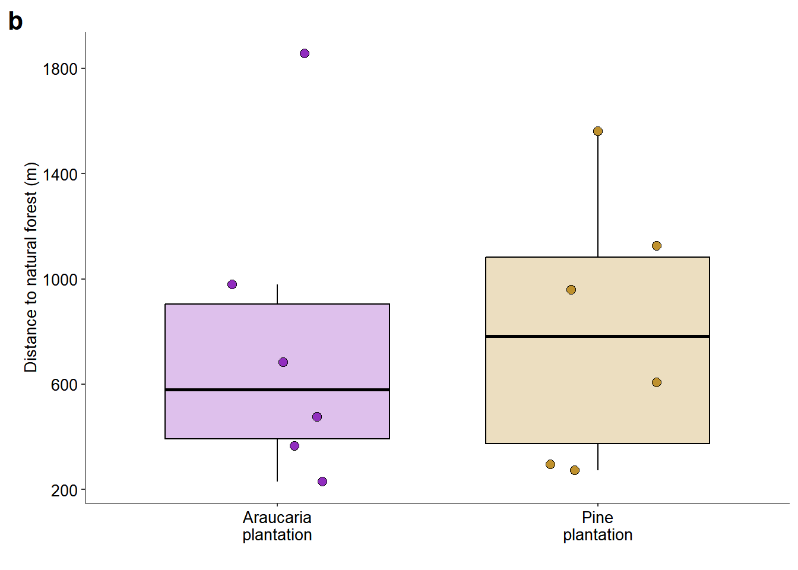
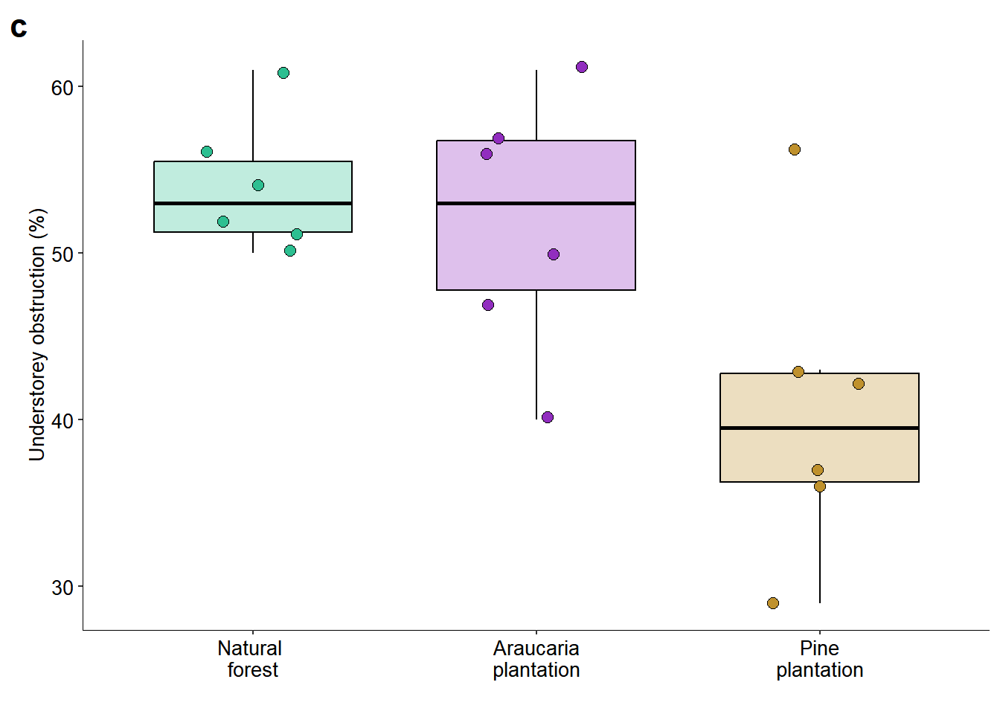

set.seed(26)2 Characteristics of the tree plantations
We assessed whether the native (Araucaria angustifolia) and exotic (Pinus elliottii) tree plantations differ in three aspects: age, understorey vegetation obstruction, and distance to the nearest natural forest patch larger than 10 hectares.
Ensuring reproducibility
Loading packages
library(stats)
library(ggplot2)
library(ggpubr)
library(patchwork)
library(rstatix)Importing data
# https://knb.ecoinformatics.org/view/doi:10.5063/F1QR4VK1
setwd("C:/Users/ivana/OneDrive/FLONA_aves/data")
data <- read.csv("FLONA-PF_dataset.txt", sep = "\t")
env_all <- data[,1:8]
env_plant <- subset(env_all, forest.type != "Natural_forest")Preparing data
color <- rep(c("#912DBF","#BF912D"), each = 6)
color_complete <-rep(c("#2DBF91","#912DBF","#BF912D"), each = 6)2.1 Age
2.1.1 Performing a t-test
# Perform the Shapiro-Wilk test to check if age data is normally distributed
shapiro.test(env_plant$age) # It's normal (p > 0.05)
Shapiro-Wilk normality test
data: env_plant$age
W = 0.94715, p-value = 0.5957# Perform Levene's test to check for homogeneity of variances across forest types
levene_test(age ~ forest.type, data = env_plant) # The variances are homogeneous (p > 0.05)Warning in leveneTest.default(y = y, group = group, ...): group coerced to
factor.# A tibble: 1 × 4
df1 df2 statistic p
<int> <int> <dbl> <dbl>
1 1 10 0.546 0.477# Perform a t-test to compare age between forest types
t.test(env_plant$age ~ env_plant$forest.type, var.equal = TRUE)
Two Sample t-test
data: env_plant$age by env_plant$forest.type
t = 4.6696, df = 10, p-value = 0.0008813
alternative hypothesis: true difference in means between group Araucaria_plantation and group Pine_plantation is not equal to 0
95 percent confidence interval:
4.967017 14.032983
sample estimates:
mean in group Araucaria_plantation mean in group Pine_plantation
62.66667 53.16667 There was a significant difference in age between the two plantation types (t = 4.6696, p < 0.001).
2.1.2 Plotting the graph
plot_age <-
ggplot(data = env_plant,
aes(x = forest.type, y = age)) +
scale_y_continuous(breaks = c(50, 55, 60, 65, 70, 75)) +
geom_boxplot(outlier.shape = NA,
width = 0.7, col = "black", fill = c("#912DBF","#BF912D"),
alpha = 0.30, show.legend = FALSE) +
geom_jitter(shape= 21,
width = 0.2, height = 0.2, colour = "black",
fill = color, size = 2.5) +
scale_x_discrete(labels = c("Araucaria\nplantation",
"Pine\nplantation")) +
labs(x = " ", y = "Age in 2021 (years)", colour="black",
tag = "a") +
theme_pubr (base_size = 10) +
theme(axis.line = element_line(linewidth = 1/3))+
theme(plot.tag = element_text(size = 16, face = "bold"))
plot_age
2.2 Distance to forest
2.2.1 Performing a t-test
# Perform the Shapiro-Wilk test to check if the distances to the nearest natural forest are normally distributed
shapiro.test(env_plant$distance.forest.m) # It's normal (p > 0.05)
Shapiro-Wilk normality test
data: env_plant$distance.forest.m
W = 0.89872, p-value = 0.1527# Perform Levene's test to check for homogeneity of variances across forest types
levene_test(distance.forest.m ~ forest.type, data = env_plant) # The variances are homogeneous (p > 0.05)Warning in leveneTest.default(y = y, group = group, ...): group coerced to
factor.# A tibble: 1 × 4
df1 df2 statistic p
<int> <int> <dbl> <dbl>
1 1 10 0.000242 0.988# Perform a t-test to compare the distances to the nearest natural forest between forest types
t.test(env_plant$distance.forest.m ~ env_plant$forest.type, var.equal = TRUE)
Two Sample t-test
data: env_plant$distance.forest.m by env_plant$forest.type
t = -0.12128, df = 10, p-value = 0.9059
alternative hypothesis: true difference in means between group Araucaria_plantation and group Pine_plantation is not equal to 0
95 percent confidence interval:
-749.5126 672.1339
sample estimates:
mean in group Araucaria_plantation mean in group Pine_plantation
764.7762 803.4655 The distance of the tree plantations to the nearest natural forest did not differ significantly between the two types of plantation (t = -0.121; p = 0.906).
2.2.2 Plotting the graph
plot_dist <-
ggplot(data = env_plant,
aes(x = forest.type, y = distance.forest.m)) +
geom_boxplot(outlier.shape = NA,
width = 0.7, col = "black",
fill = c("#912DBF", "#BF912D"),
alpha = 0.30, show.legend = FALSE) +
geom_jitter(shape= 21, width = 0.2,
height = 0.2, colour = "black",
fill = color, size = 2.5) +
scale_x_discrete(labels = c("Araucaria\nplantation",
"Pine\nplantation")) +
scale_y_continuous(breaks = c(200, 600, 1000, 1400, 1800)) +
labs(x = " ",
y = "Distance to natural forest (m)",
colour="black",
tag = "b") +
theme_pubr (base_size = 10) +
theme(axis.line = element_line(linewidth = 1/3)) +
theme(plot.tag = element_text(size = 16, face = "bold"))
plot_dist
2.3 Understory vegetation obstruction
2.3.1 Fitting an ANOVA model
# Perform the Shapiro-Wilk test to check if understorey vegetation obstruction is normally distributed
shapiro.test(env_all$obstruction) # It's normal (p > 0.05)
Shapiro-Wilk normality test
data: env_all$obstruction
W = 0.94235, p-value = 0.3177# Perform Levene's test to check for homogeneity of variances across forest types
levene_test(obstruction ~ as.factor(forest.type), data = env_all) # The variances are homogeneous (p > 0.05)# A tibble: 1 × 4
df1 df2 statistic p
<int> <int> <dbl> <dbl>
1 2 15 1.22 0.322# Perform one-way ANOVA to test for differences in understorey vegetation obstruction between forest types
anova <- aov(obstruction ~ forest.type, data = env_all)
summary(anova) Df Sum Sq Mean Sq F value Pr(>F)
forest.type 2 630.8 315.39 5.986 0.0123 *
Residuals 15 790.3 52.69
---
Signif. codes: 0 '***' 0.001 '**' 0.01 '*' 0.05 '.' 0.1 ' ' 1# Perform the Shapiro-Wilk test on the residuals to check if they are normally distributed
shapiro.test(anova$residuals) # Residuals of the ANOVA model are normal (p > 0.05)
Shapiro-Wilk normality test
data: anova$residuals
W = 0.9706, p-value = 0.8089# Perform Levene's test on residuals to check for homogeneity of variances
levene_test(anova$residuals ~ as.factor(forest.type), data = env_all) # The variances are homogeneous (p > 0.05)# A tibble: 1 × 4
df1 df2 statistic p
<int> <int> <dbl> <dbl>
1 2 15 1.22 0.322# Perform Tukey's HSD post-hoc test to compare pairwise differences between forest types
par_par <- TukeyHSD(anova)
par_par Tukey multiple comparisons of means
95% family-wise confidence level
Fit: aov(formula = obstruction ~ forest.type, data = env_all)
$forest.type
diff lwr upr p adj
Natural_forest-Araucaria_plantation 2.166667 -8.718861 13.052194 0.8642904
Pine_plantation-Araucaria_plantation -11.333333 -22.218861 -0.447806 0.0408047
Pine_plantation-Natural_forest -13.500000 -24.385527 -2.614473 0.0148458Understorey vegetation obstruction significantly differed between forest types (F = 5.986, p = 0.01). We found significant differences between pine plantations and natural forests (diff = -13.50, p = 0.015) and between pine plantations and araucaria plantations (diff = -11.33, p = 0.041). No significant difference was found between araucaria plantations and natural forests (diff = 2.16, p = 0.864).
2.3.2 Plotting the graph
# Renaming forest types for consistent ordering in the plot
env_all$forest.type[env_all$forest.type == "Natural_forest"] <- "1.Natural_forest"
env_all$forest.type[env_all$forest.type == "Araucaria_plantation"] <- "2.Araucaria_plantation"
env_all$forest.type[env_all$forest.type == "Pine_plantation"] <- "3.Pine_plantation"
plot_obs <-
ggplot(data = env_all,
aes(x = forest.type, y = obstruction)) +
geom_boxplot(outlier.shape = NA,
width = 0.7, col = "black",
fill = c("#2DBF91", "#912DBF", "#BF912D"),
alpha = 0.30, show.legend = FALSE) +
geom_jitter(shape= 21,
width = 0.2, height = 0.2, colour = "black",
fill = color_complete, size = 2.5) +
scale_x_discrete(labels = c("Natural \nforest",
"Araucaria\nplantation",
"Pine\nplantation")) +
labs(x = " ", y = "Understorey obstruction (%)", colour="black",
tag = "c") +
theme_pubr (base_size = 10) +
theme(axis.line = element_line(linewidth = 1/3)) +
theme(plot.tag = element_text(size = 16, face = "bold"))
plot_obs
2.3.3 Saving the graph
ggsave(
plot = plot_age + plot_dist + plot_obs,
filename = "charact_plantation.png", dpi = 500,
width = 7 * 3, height = 7, units = 'cm')